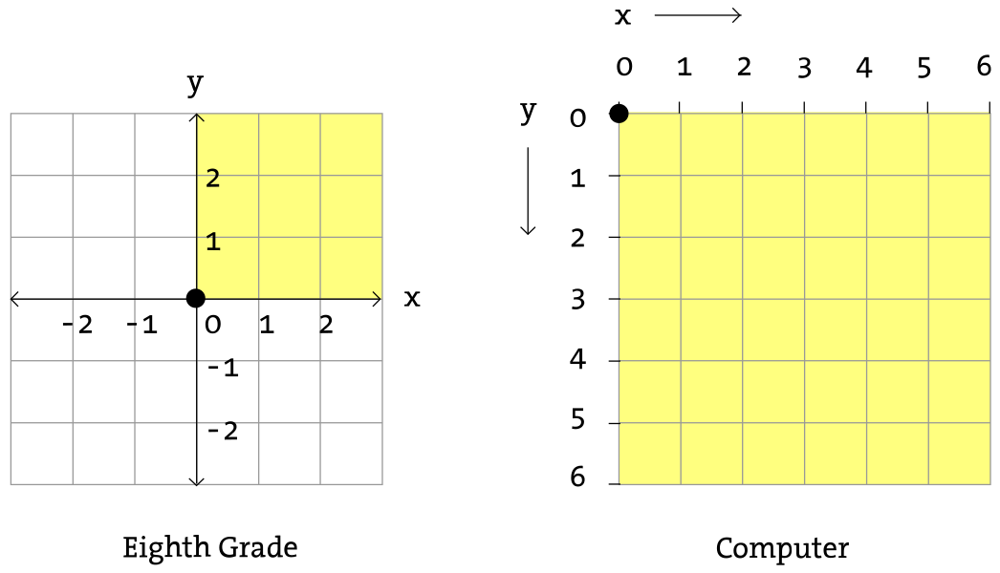

Sistema Coordenado y Figuras
Antes de comenzar a programar con p5.js debemos primero remontarnos a nuestra infancia, tomar un trozo de papel y dibujar una línea. La distancia más corta entre dos puntos es una línea y ese es nuestro punto de partida, con dos puntos en un gráfico.

La figura anterior muestra una línea que une un punto A (1,0) y un punto B (4,5). Si le hubieras pedido a un amigo que dibujara la línea por ti, tendrías que haberle dado las indicaciones "traza una línea desde el punto uno coma cero hasta el punto cuatro coma cinco, por favor". Bueno, por el momento imagina que tu amigo era un computador al que solicitaste dibujar la misma línea en su pantalla. El mismo comando aplica (solo que en esta caso puedes obviar formalidades y deberás utilizar un formato preciso). Aquí la instrucción es como sigue:
line(1,0,4,5);
Aun sin haber estudiado la sintaxis, la expresión anterior debiera haberte hecho sentido. Estamos entregando a la máquina un comando llamado "línea" (al que nos referiremos como "función") para ser ejecutado. Adicionalmente estamos espcificando argumentos que indican cómo la línea debería ser dibujada, desde un punto A (1,0) hasta un punto B (4,5). Si pensamos una línea de código como una frase, la función es un verbo y los argumentos son los objetos de la frase. La frase de código termina con un punto y coma en vez de un punto final.

La clave aquí es darse cuenta que la pantalla del computador es la abstracción de un trozo de papel. Cada pixel de la pantalla es una coordenada -dos números, "x" (horizontal) e "y" (vertical)- que determinan la ubicación de un punto en el espacio. Y es nuestro trabajo especificar qué figuras y colores debieran apareceren en dicha coordenada de pixeles.
Sin embargo hay una trampa. El gráfico que nos enseñaron cuando chicos ("Sistema Coordenado Cartesiano") ubicaba el punto (0,0) en el centro con el "eje y" apuntando hacia arriba, y el "eje x" apuntando hacia la derecho (hacia los números positivos, los negativos hacia la izquierda y abajo). El sistema coordenado para pixeles en una pantalla de computador, en cambio, está invertido en el eje y. (0,0) se ubica en la parte superior izquierda con la dirección positiva apuntando horizontalmente hacia la derecha y abajo.
Formas Primitivas
La mayoría de los ejemplos en p5.js son de naturaleza visual. Ellos implican principalmente dibujar figuras y definir coordenadas de pixeles. Comencemos observando las cuatro formas primitivas.

Para cada figura nos debemos preguntar qué información requerimos para especificar su ubicación y tamaño (y luego su color) y entender cómo p5.js espera recibir dicha información. En cada uno de los siguientes diagramas asumiremos una ventana de 100 pixeles de ancho y 100 pixeles de alto.
Un point() es la forma más simple y un buen lugar para comenzar. Para dibujar un punto solo necesitamos un par ordenado (x,y).
Una line() tampoco es terriblemente compleja y solo requiere dos puntos: (x1,y1) y (x2,y2):
Una vez que llegamos a dibujar un rect(), las cosas se tornan un poco más complejas. En p5.js un rectángulo se especifica con las coordenadas de su esquina superior izquierda, así como ancho y alto.
Una segunda manera de dibujar un rectángulo requiere especificar su punto central junto con su ancho y alto. Si preferimos este método, debemos indicar previamente que queremos utilizar el modo CENTER antes de la instrucción del propio rectángulo. Notemos que p5.js es sensible a cada caso.
Finalmente podemos dibujar un rectángulo con dos puntos (la esquina superior izquierda y la esquina superior derecha). El modo en este caso es CORNERS. Notar que este ejemplo entrega el mismo resultado en pantalla que el ejemplo anterior.
Una vez que nos hemos familiarizado con el concepto de dibujar un rectángulo, una ellipse() es muy sencilla de dibujar. De hecho es idéntica al rect() con la diferencia de que la elipse se dibuja donde la caja que contiene al rectángulo debiera estar. El modo por defecto para la ellipse() es CENTER, en vez de CORNER.
Ahora observemos una aplicación un poco más realista, con una pantalla de dimensiones 200 por 200. Notemos el uso de la función createCanvas() para especificar el tamaño de la ventana.